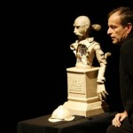

UTSATT - Integrering av figur - workshop m/Knut Alfsen og Katinka Rydin Berge - 3 dager
- Kategori:
- Kurs med åpning for andre
Kurs med åpning for andre
Åpent for profesjonelle skuespillere. En viss åpning for andre utøvende kunstnere med relevant erfaring. Andre kunstnere må sende CV. - Dato:
- 31.03.2016 til 06.04.2016
- Start kl :
- 10:00
- Slutt kl :
- 15:00
- Pris:
- 800,-
- Adresse:
- Norsk Skuespillersenter, Welhavens gate 1, Oslo
OBS: UTSATT, NY DATO TIL HØSTEN KOMMER.
- Kunstneriske strategier for figur og objekt i skuespillerarbeidet
NB! Alle som ønsker å jobbe med integrering av figur ønskes velkommen til dette kurset! Gjelder også figurteaterstudenter.
Den nåtidige skuespiller utvikler ofte forestillinger, skriver manus og vil være med å skape sitt eget kunstneriske virke i møte med andre scenekunstnere.
Skuespiller og figurteaterkunstner Knut Alfsen har igjennom en lang karriere utviklet eget materiale i samarbeid med scenograf Agnes Schou i Levende Dukker.
Møtet mellom den visuelle kunstneren og skuespilleren kan være et magisk møte som kan føde et sterkt visuelt og unikt kunstnerisk utrykk. Knut Alfsen og regissør og dramaturg Katinka Rydin Berge inviterer skuespillere, scenografer og andre figurinteresserte utøvere til et lekent møte med utgangspunkt i egne ideer. Vi inviterer til et kurs som skal gir strategier for samarbeid og utvikling fra idé til figurteater. Et møte mellom det visuelle og performative.
Kurset vil inneholde:
Kunstneriske strategier for figur og objekt i skuespillerarbeidet.
Kunstneriske strategier for samarbeid med skuespillere i utviklingsprosessen av et visuelt utrykk for figurteater.
Idémyldring på prosjektet ditt i gruppen.
Teknisk innføring i bruk av ulike typer dukker.
Dramaturgiske samtaler om ditt prosjekt.
Utprøving av musikk.

{kind=link}
{kind=link}
{kind=link}
Kursdatoer:
31. mars kl 10:00 - 15:00
5. april kl 10:00 - 15:00
6. april kl 10:00 - 15:00
Påmelding:
Kurset er for alle som ønsker å jobbe med figur.
Send inn en tekst, bilde, fysisk romlig prosjekt, som du vil arbeide med på kurset.
Begrunn hvorfor du kunne tenke deg å teste ut dette materialet som figurteater.
Om Levende Dukker
{kind=link}
Levende Dukker ledes av Knut Alfsen, og har i flere tiår vært en kunstnerisk drivkraft, igangsetter, regissør og profilert figurteater-utøver i Norge. Han var med å starte Figurteatret i Nordland - Norges eneste institusjon dedikert til figur og objektteater, og har drevet sitt eget kompani Levende Dukker i 20 år ved siden av å være regissør for en rekke dukke- og figurproduksjoner i Norge og internasjonalt. Levende Dukker har arbeidet spesielt med kunstneriske prosjekter i kryssfeltet figur og levende musikk.
Kompaniet ønsker i samarbeid med Norsk Skuespillersenter å dele av sin kompetanse på figurteater med skuespillere som ikke har kjennskap til figur i sin utdanning eller kunstneriske praksis, og som ønsker å utvikle flere strategier for kunstnerisk arbeid på scenen ved bruk av objekter.
 Katinka Rydin Berge, som nyutdannet regissør med en tradisjonell regiutdannelse, ble ved en tilfeldighet kastet inn i figurteateret på Riksteatret i 2004. Her oppdaget hun figurteater som et verktøy i teater. Hun utvikler scenekunstprosjekter som regissør, dramaturg og manusforfatter. Hun har samarbeidet med Levende Dukker om å utvikle forestillingen Gjøkungen for 2 – 5-åringer, der hun hadde manus og regi. Å utvikle gode situasjoner med objekter handler ofte om musikalitet og god lytting mellom objekt og spiller, mener hun. Figurteater er en metode for å få en visuell verden til å leve uten ord. Figur har et stort internasjonalt potensial som flere burde benytte seg av som scenekunstnere i Norge. Figur kan være en måte å nå et større internasjonalt publikum, både som skuespiller og designer. I sitt eget Kompani Camping, utvikler og regisserer hun ofte ny reseachbasert dramatikk. Hun er involvert som initiativtaker og kunstnerisk programmerer for Vega Scene; En scene for ny resarchbasert dramatikk og film som bygges i Oslo.
Katinka Rydin Berge, som nyutdannet regissør med en tradisjonell regiutdannelse, ble ved en tilfeldighet kastet inn i figurteateret på Riksteatret i 2004. Her oppdaget hun figurteater som et verktøy i teater. Hun utvikler scenekunstprosjekter som regissør, dramaturg og manusforfatter. Hun har samarbeidet med Levende Dukker om å utvikle forestillingen Gjøkungen for 2 – 5-åringer, der hun hadde manus og regi. Å utvikle gode situasjoner med objekter handler ofte om musikalitet og god lytting mellom objekt og spiller, mener hun. Figurteater er en metode for å få en visuell verden til å leve uten ord. Figur har et stort internasjonalt potensial som flere burde benytte seg av som scenekunstnere i Norge. Figur kan være en måte å nå et større internasjonalt publikum, både som skuespiller og designer. I sitt eget Kompani Camping, utvikler og regisserer hun ofte ny reseachbasert dramatikk. Hun er involvert som initiativtaker og kunstnerisk programmerer for Vega Scene; En scene for ny resarchbasert dramatikk og film som bygges i Oslo.
Pris for NSF-medlemmer: 750,-
.